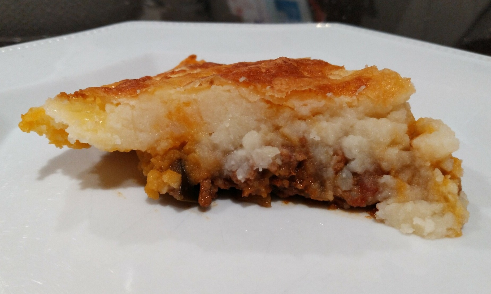

Indian Shepherd’s Pie
 Meat
Meat

- 500g lamb mince
- 2 onions, finely chopped
- 1 eggplant, diced
- 2 cloves of garlic, crushed
- 1/3 cup of indian spice paste (vindaloo or rogan josh)
- 400g diced tomatoes
- 1/3 tomato sauce
- 2/3 cup of water
- 1kg potatoes, peeled and cut into cubes
- 1/2 cup milk
- 75g margarine
Preheat oven to 200 degrees and grease casserole dish
Cook lamb until browned and remove
Saute onions, eggplant, garlic and cook until soft
Stir in paste
Add cooked lamb and tomatoes, sauce and water. Bring to boil, cover with a lid and leave to simmer for 10 mins.
Transfer to casserole dish, spoon mash potao on top of lamb. Sprinkle with cheese.
Cook in oven for 35 mins